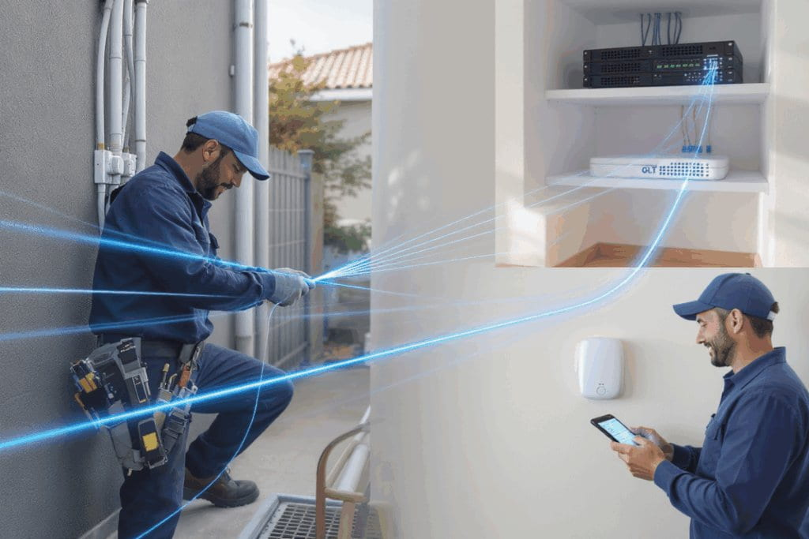

Curiosidad
En el siguiente vídeo puedes ver una curiosa historia que se desarrolla entre una línea y un punto 
Ecuación paramétrica de la recta
Dado un punto \(P=(p_1,p_2,p_3)\) y un vector \(\vec{v}=(v_1,v_2,v_3)\) hemos visto que la ecuación vectorial de la recta se obtiene como
\[r \equiv (x,y,z)=(p_1,p_2,p_3)+t(v_1,v_2,v_3)\]
Si desarrollamos la ecuación tenemos que
\[(x,y,z)=(p_1,p_2,p_3)+(t\cdot v_1,t\cdot v_2,t\cdot v_3) \longrightarrow (x,y,z)=(p_1+t\cdot v_1,p_2+t\cdot v_2,p_3+t\cdot v_3)\]
Y para que esta igualdad se verifique se debe cumplir que
\[r \equiv \begin{cases} x = p_1+t\cdot v_1 \\ y = p_2+t\cdot v_2 \\ z = p_3+t\cdot v_3 \end{cases}\]
Esta última ecuación se llama ecuación paramétrica de la recta.
Para obtener esta ecuación observamos que basta con tener un punto de la recta y un vector director.
Ejercicio
Deseamos calcular la ecuación paramétrica de una recta que pasa por el punto \(P=(2,-3,1)\) y tiene como vector director \(\vec{v}=(-2,4,7)\). Calcula también otro punto de esta recta.
Ejercicio
Encuentra la ecuación paramétrica de la recta que pasa por los puntos \(P=(2,-3,-1)\) y \(Q=(1,-3,2)\).
Calcula otro punto \(A\) de esta recta.
Completa
Dadas las siguientes rectas
\[r \equiv \begin{cases} x = 1+3t \\ y = 0 \\ z = -1+2t \end{cases} \qquad s \equiv \begin{cases} x = -3+4t \\ y = -3+t \\ z = 2t \end{cases} \qquad t \equiv \begin{cases} x = 2-5t \\ y = -4+2t \\ z = 5-t \end{cases}\]
Ecuación continua de la recta
Seguimos profundizando en la ecuación de la recta.
Sabemos que para obtener la ecuación de una recta necesitamos un punto \(P=(p_1,p_2,p_3)\) y un vector director \(\vec{v}=(v_1,v_2,v_3)\). A partir de estos datos ya sabemos cómo obtener dos ecuaciones distintas de la misma recta:
la ecuación vectorial:
\[r \equiv (x,y,z)=(p_1,p_2,p_3)+t(v_1,v_2,v_3)\]
y la ecuación paramétrica:
\[r \equiv \begin{cases} x = p_1+t\cdot v_1 \\ y = p_2+t\cdot v_2 \\ z = p_3+t\cdot v_3 \end{cases}\]
A partir de la ecuación paramétrica, despejando el parámetro \(t\) en cada ecuación tenemos que:
\[r \equiv \begin{cases} x = p_1+t\cdot v_1 \\ y = p_2+t\cdot v_2 \\ z = p_3+t\cdot v_3 \end{cases} \implies r \equiv \begin{cases} t = \frac{x-p_1}{v_1} \\[1ex] t = \frac{y-p_2}{v_2} \\[1ex] t = \frac{z-p_3}{v_3} \end{cases} \quad \text{Por tanto}\]
\[r \equiv \frac{x-p_1}{v_1} = \frac{y-p_2}{v_2} = \frac{z-p_3}{v_3}\]
A esta ecuación se le llama Ecuación continua de la recta.
Ejercicio

Un ingeniero ha diseñado los planos de un edificio y sabe que el cable de fibra óptica del mismo, que baja en línea recta, pasa por los puntos \(A=(2,6,-3)\) y \(B=(3,3,-2)\). El problema es que debe atravesar alguno de los muros de carga del edificio que, según el diseño, son puntos en el que alguna de las coordenadas es nula. Calcula la ecuación continua de la recta que sigue el cable y encuentra los puntos en los que puede haber algún problema.
Ejercicio
Calcula la ecuación continua de la recta que pasa por el punto \(P=(2,-3,-5)\) y es paralela a la recta de ecuación
\[r \equiv \begin{cases} x = 1+3t \\ y = 2-4t \\ z = -5t \end{cases}\]
Verdadero o Falso
Dada la recta \[s \equiv \dfrac{x+6}{3}=\dfrac{y-4}{-4}=z+1\]
00:00: